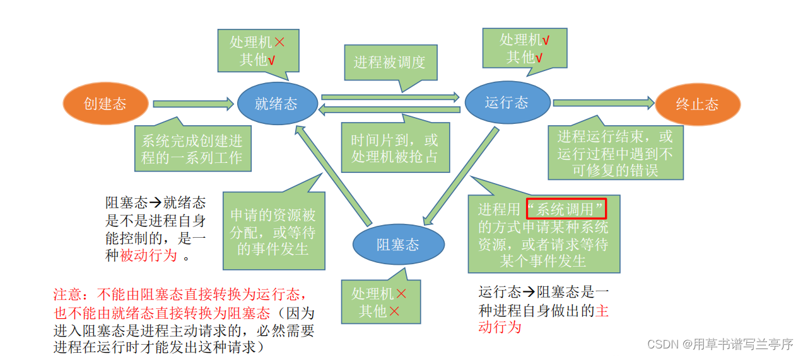
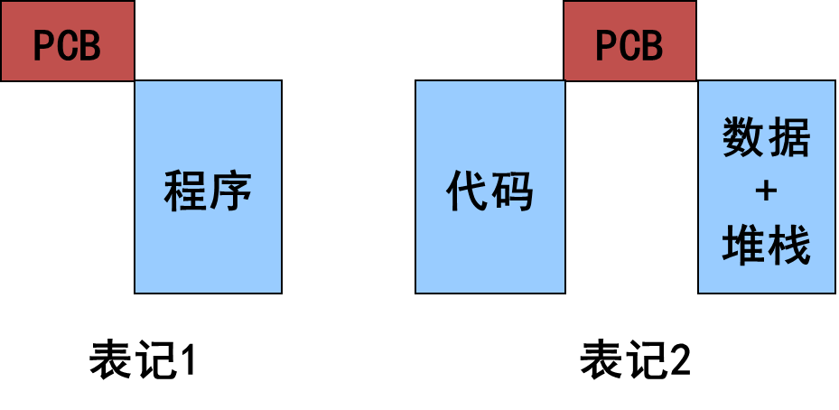
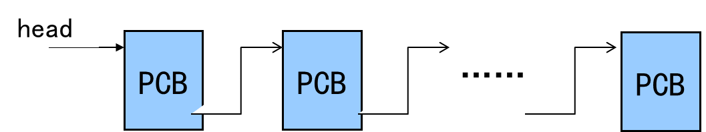
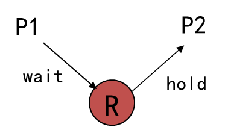
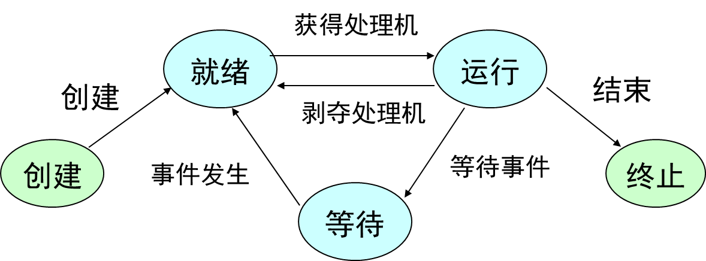
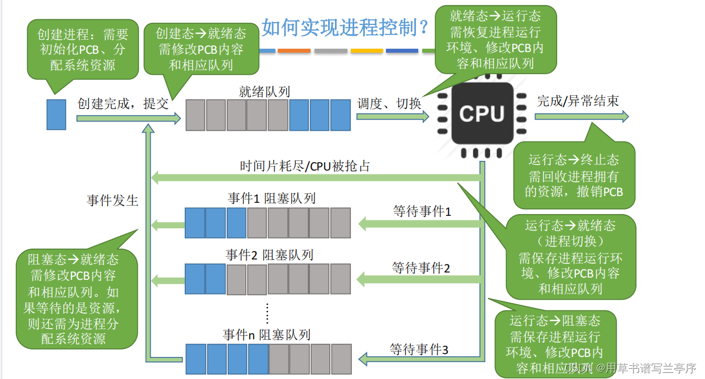
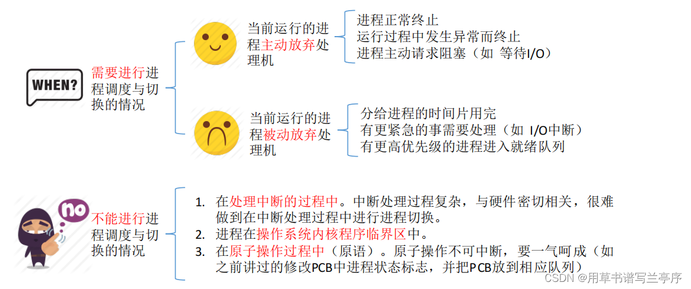
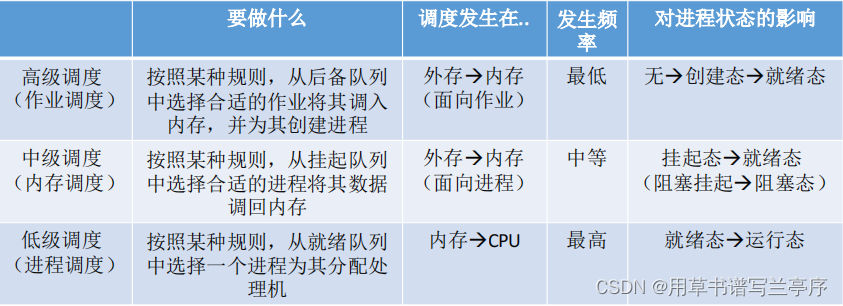

进程、线程与作业
多道程序设计
[!tip]
单道程序设计：一次只允许一个程序进入系统的程序设计方法
缺点：资源利用率低.
- 多道程序设计：多个程序同时进入系统并投入执行的一种程序设计方法
- 例题
§进程P对磁盘数据进行处理，其处理流程为：
§① 读入一块磁盘数据；
§② 处理该块数据；
§③ 把处理后的该块数据写到磁带上。
§假设：进程P要处理3个磁盘块的数据，读一个磁盘块数据需要40ms，处理一块数据需要20ms，写一块磁带数据需要80ms，并假设系统只有进程P运行。在不考虑系统开销的情况下，
§问 题：
§ ⑴ 进程P把3块数据处理流程都完成，画出CPU运行、磁盘输入、磁带输出的时序图；
§ ⑵ 依据⑴画出的时序图，计算进程P等待设备I/O的时间。
[!warning]
对于内存中的程序数量：
道数过少，系统资源利用率低
道数过多，系统开销(system overhead)增大，程序响应速度下降
- 多道程序设计的问题
- 如何分配处理资源
- 对于存储资源的管理
- 设备资源管理：即分配策略
进程的引入
[!note]
暂停：保存现场(PSW+PC，寄存器）
推进：恢复现场(寄存器，PSW+PC)
暂停原因：(1) 自身原因：等待资源，启动IO (2) 剥夺CPU—给其它程序运行机会
- 进程的定义
进程是程序的一次执行
进程是可以参与并发执行的程序
进程是程序和数据一道通过处理器执行时所发生的活动
进程是具有一定独立功能的程序关于一个数据集合的一次运行活动.
- 进程是进程实体的运行过程，是系统进行资源分配和调度（对于没有内核级线程的前提下）的一个独立单位。
[!important]
动态：是程序的一次执行过程。同一程序多次执行会对应多个进程。这是进程和程序的本质差异
并发：可与其它进程同时执行，宏观同时，微观上“交替执行”，不要求多个CPU
进程状态及状态转换
- 进程状态（基本状态）
[!note]
- 创建态：系统创建进程，操作系统给进程分配系统资源、PCB等等
- 就绪态：已经具备运行条件，等待空闲的CPU，进行调用
- 运行态：当CPU处于空闲阶段就会在就绪态的进程里面选择一个进行执行，也就是把CPU占据进入了运行态，一核的CPU就只可以一次运行一个进程，多少核的CPU可以有多少个进程处于运行态
- 阻塞态：因为某个事件而暂时不可用运行
- 终止态：运行进程从CPU撤销，操作系统就会回收资源、撤销PCB

- 进程状态转换由操作系统完成，对用户是透明的
- 进程在其生存期内经过多次状态转换
[!tip]
进程状态转换原因:
- CPU调度
- 进程在运行过程中需要等待某一事件
- 进程等待的事件发生.
PCB(进程控制块)
[!note]
标志进程存在的数据结构，其中保存系统管理进程所需的全部信息
例如：进程标识(pid)，进程状态，现场信息，调度参数，所属用户(uid)
作用
当调度某进程执行时，需要从该进程的PCB中查询其状态及优先级等参数
当调度到某进程后，根据PCB中的现场信息恢复现场，并根据PCB中的程序和数据的内存地址找到程序和数据
进程执行过程中，当需要与其它进程通信时，也要访问PCB
当进程发生进程切换时，需要将现场信息从系统栈弹出，保存于PCB中
系统建立进程时建立PCB，撤销进程时撤销PCB.
进程的组成与上下文
进程的组成（进程映像）
进程控制块（PCB）
程序
代码(程序段)：实现相应的功能
数据(数据段)：静态数据+动态堆和动态栈
堆栈(stack+heap)
栈：保存返回值、参数、断点、局部变量
堆：动态变量
进程的表记
进程的程序(PCB，代码和数据)称为进程影像(Process Image)

进程的上下文
[!note]
- PCB+程序
- 系统环境：地址空间，系统栈，打开文件表，…
上下文的切换
由一个进程的上下文转到另外一个进程的上下文
系统开销（system overhead)
运行操作系统程序完成系统管理工作所花费的时间和空间
进程切换时需要保存的现场信息
地址寄存器:保存当前CPU所访问的内存单元的地址
通用寄存器:用于传送和暂存数据，也可参与算术逻辑运算，并保存运算结果
浮点寄存器:用于存储浮点数字，它决定着计算机的计算精度。
SP(系统栈指针)
PSW(程序状态字)
PC(指令计数器)
打开文件表(页表)
进程的队列
[!note]
PCB构成的队列：（不一定FIFO，单向或双向）
- 就绪队列：系统一个或若干个（根据调度算法确定）
- 等待队列：每个等待事件一个（可能对应不同设备各有一个，甚至对于一个设备不同请求一个）
- 运行队列

进程的类型与特征
进程类型
系统进程（内核态运行）
运行操作系统程序，管态，完成系统管理(服务)功能
一个系统进程所完成的内容相对独立和具体，在进程生存周期保持不变，因而它们通常对应一个无限循环程序，在系统启动后便一直存在，直到系统关闭
系统进程承担系统的管理和维护性任务，优先级高于一般用户进程
用户进程（用户态运行）
在操作系统之上运行的所有程序
运行用户(应用)程序，为用户服务
进程特征
[!note]
- 并发性：可以与其它进程一道向前推进；
- 动态性：动态产生、消亡，生存期内动态变化；
- 独立性：一个进程是可以调度的基本单位；
- 交互性：同时运行的进程可能发生相互作用；
- 异步性：进程以各自独立，不可预知的速度向前推进；
- 结构性：每个进程有一个PCB。
进程间相互联系与相互作用
相互联系
相关进程
同一家族的进程
可以共享文件，需要相互通讯，协调推进速度…
父进程可以监视子进程，子进程完成父进程交给的任务
无关进程
没有逻辑关系、同时执行的进程。
有资源竞争关系，互斥、死锁、饿死。
相互作用
直接相互作用
发生在相关进程之间，进程之间不需要通过媒介而发生相互作用
间接相互作用
发生在任何进程之间

进程的创建与撤销
进程创建
[!note]
- 向系统申请一个空闲PCB，并指定唯一的进程标识
- 为新进程分配资源
- 初始化新进程的PCB加载程序
- 将PCB入就绪队列.
例如：用户登录，作业调度，提供服务，应用请求.
进程撤销
[!note]
从系统PCB表中找到被撤销进程的PCB
检查被撤销进程的状态是否为执行状态。若是，则立即停止该进程的执行
设置重新调度标志，以便在该进程撤销后将处理器分配给其它进程
检查被撤销进程是否有子孙进程，若有子孙进程还应撤销该进程的子孙进程
回收该进程占有的全部资源并回收其PCB.
例如：正常结束，异常结束，外界干预
进程汇聚和等待，唤醒
进程汇聚
例如：
- Java语言中，子线程汇聚到父线程
- 用于数学计算，例如矩阵。，
进程等待
停止当前进程的执行
保存该进程的现场信息。
将进程状态改为等待.
引起进程等待事件，例如：请求系统服务，启动某种操作，新数据未获取，无新工作
进程唤醒
将被唤醒进程从相应的等待队列中移除
将进程状态改为就绪，并将该进程插入就绪队列.
[!important]
父进程创建子进程与主程序调用子程序区别?
- 进程创建子进程后，父进程与子进程可并发执行
- 主程序调用子程序后，主程序暂停在调用点，子程序开始执行，直到子程序执行完毕返回，主程序才开始执行
考虑生灭的进程状态转换图
[!important]



进程与程序 的联系与差别
进程与程序的联系
进程包括一个程序
进程存在的目的就是执行这个程序
进程与程序的差别
程序静态，进程动态
程序可长期保存，进程有生存期
一个程序可对应多个进程，一个进程只能执行一个程序
思考题
[!note]
若系统中没有运行进程，是否一定没有就绪进程？
是的。当系统中没有运行进程时，操作系统会立即触发调度程序。若就绪队列中存在进程，调度程序必然选择一个进程投入运行。因此，没有运行进程的唯一可能是就绪队列为空，即没有就绪进程。若系统中既没有运行进程，也没有就绪进程，系统中是否就没有进程？
否。系统中可能存在处于阻塞状态的进程（如等待I/O或事件），这些进程不占用CPU也不在就绪队列中，但仍然是系统中的有效进程。在采用优先级调度时，运行进程是否一定是系统中优先级最高的进程？
否。若系统采用非抢占式调度，即使有更高优先级的进程进入就绪队列，当前运行进程仍会继续执行，直到主动释放CPU。只有在抢占式调度下，运行进程才保证是优先级最高的。某进程被唤醒后立即投入运行，是否说明系统采用剥夺式调度？
否。例如，若原运行进程已主动阻塞（如等待I/O），此时唤醒的进程可能是唯一就绪进程，无需剥夺即可运行。这种情况与调度策略是否为剥夺式无关，因此不能以此判断。
线程与轻进程
线程的概念
进程中一个相对独立的执行流。（轻量级进程）
进程是CPU资源分配的最小单位
线程是CPU调度和执行的最小单位（仅仅对于内核级线程，而用户级线程对于内核透明）
多线程优点
切换速度快（地址空间不变）(light weighted)
系统开销小（用户级线程）
通讯容易（共享数据空间）
[!important]
进程与线程的区别和联系
区别：
- 调度：线程作为调度和分配的基本单位，进程作为拥有资源的基本单位；
- 并发性：不仅进程之间可以并发执行，同一个进程的多个线程之间也可并发执行；
- 拥有资源：进程是拥有资源的一个独立单位，线程不拥有系统资源，但可以访问隶属于进程的资源。进程所维护的是程序所包含的资源（静态资源）， 如：地址空间，打开的文件句柄集，文件系统状态，信号处理handler等；线程所维护的运行相关的资源（动态资源），如：运行栈，调度相关的控制信息，待处理的信号集等；
- 系统开销：在创建或撤消进程时，由于系统都要为之分配和回收资源，导致系统的开销明显大于创建或撤消线程时的开销。但是进程有独立的地址空间，一个进程崩溃后，在保护模式下不会对其它进程产生影响，而线程只是一个进程中的不同执行路径。线程有自己的堆栈和局部变量，但线程之间没有单独的地址空间，一个进程死掉就等于所有的线程死掉，所以多进程的程序要比多线程的程序健壮，但在进程切换时，耗费资源较大，效率要差一些。
联系：
- 一个线程只能属于一个进程，而一个进程可以有多个线程，但至少有一个线程；
- 资源分配给进程，同一进程的所有线程共享该进程的所有资源；
- 处理机分给线程，即真正在处理机上运行的是线程；
- 线程在执行过程中，需要协作同步。不同进程的线程间要利用消息通信的办法实现同步。
线程控制块（TCB）
[!note]
标志线程存在的数据结构，其中包含对线程管理需要的全部信息
内容：线程的标志和状态，调度参数，现场（寄存器，PC，SP），链接指针
存放位置：用户级线程位于目态空间，内核级线程位于系统空间
线程的操作
- 在进程创建时，同时为该进程创建第一个线程，用以运行程序，在以后适当的时候，通过“线程创建”系统调用创建线程
- 线程共享进程的代码段和数据段。但是线程有各自的用户栈，可以独立调用，占用CPU运行
- 当线程被剥夺处理器时，只需将其线程现场保存在该线程对应的栈区
- 当进程内的所有线程结束时，意味着进程结束，从而释放进程所占用的所有资源.
线程的实现
用户级线程
实现方法：
基于library函数（线程库），系统不可见
线程创建、撤销、状态转换在目态完成
TCB在用户空间，每个进程一个系统栈.
优缺点：
优点：
- 不依赖于操作系统，调度灵活
- 同一进程中多线程切换速度快(不需进入操作系统)
缺点：
- 同一进程中多个线程不能真正并行，即使在多处理器环境中
- 一个线程进入系统受阻，进程中其它线程不能执行
[!tip]
线程状态和进程状态
- 若同一进程中的多个线程至少有一个处于运行态，则该进程的状态为运行态
- 若同一进程中的多个线程均不处于运行态，但至少有一个线程处于就绪态，则该进程的状态为就绪态
- 若同一进程中的多个线程均处于等待态，则该进程的状态为等待态
核心级别线程
实现方法：
- 基于系统调用由操作系统创建
- 创建、撤销、状态转换由操作系统完成
线程是处理器调度的基本单位
TCB在操作系统空间，每个线程一个系统栈
对于核心级别线程，进程状态不具有实际意义
优缺点：
优点：
- 同一进程内多线程可以并行执行（多CPU）
- 进程中的一个线程被阻塞了，内核可以调度同一进程的其它线程占有处理器运行
缺点：线程的控制和状态转换需要进入操作系统，系统开销大
[!note]
用户级别线程和核心级别线程区别
- 核心级别线程操作系统可见；用户级别线程操作系统不可见
- 用户级别线程的创建、撤销和调度不需要操作系统的支持，且是在（程序）语言这一级处理的。核心级别线程的创建、撤销和调度都需要操作系统内核的支持
- 用户级别线程执行系统调用命令将导致其所属进程被中断，核心级别线程执行系统调用命令将导致线程被中断
- 在仅有用户线程的系统内，CPU调度以进程为单位。在有核心级别线程的系统内，CPU调度以线程为单位
- 用户级别线程的实体是运行在用户态下的程序，而核心级别线程的实体则是可以运行在任何状态下的程序
混合线程
Solaris系统
Light weighted process(LWP)
由Lib程序支持
每个task至少一个LWP
用戶级别线程与LWP可以多对多
LWP对操作系统可见
只有与LWP相联系的用户线程向前推进
[!tip]
多线程与多任务的区别：
- 多任务是针对操作系统而言的，代表操作系统可以同时执行的程序个数
- 多线程是针对一个进程而言的，代表一个进程内部可以同时执行的线程个数，每个线程完成不同的任务.
作业
[!note]
作业概念:
用户要求计算机系统为其完成的计算任务集合
作业步
作业处理过程中一个相对独立的步骤
一般一个作业步可由一个进程完成
某些作业步之间可以并行
作业分类:批处理作业，交互式作业.
作业控制块
标志作业存在的数据结构，其中包含对作业进行管理所需要的全部信息
如作业名称、作业状态、调度参数、资源请求、相关进程、作业长度、在输入井与输出井中的存放位置、记账信息等
[!tip]
作业和进程的区别
- 作业是用户向计算机提交的任务实体，而进程则是完成用户任务的执行实体，是向操作系统申请分配资源的基本单位
- 一个作业可由多个进程组成，一个作业至少由一个进程组成
- 作业的概念主要用在批处理系统中，而进程的概念则用在所有的多道程序系统中.
批处理作业
作业控制语言(JCL)：描述批处理作业控制意图的语言
作业说明书(JCL语句的序列）：一般以特殊符号起始
作业控制进程：解释并处理作业说明书的程序，执行作业控制程序的进程.
批处理作业的工作过程：
作业由假脱机输入程序控制进入输入井
经由操作系统的作业调度程序选中进入内存
同时由作业调度程序为其建立作业控制进程执行作业控制程序
作业控制进程解读作业说明书中的语句，并根据作业步的要求为其建立相应的进程
交互式作业
账户管理
/etc/passwd文件(创建用户时，系统将设置口令文件)passwd中包括注册用户的所有信息(用户名,口令,用户根目录,同组用户,余额…)，为系统文件
处理机调度
- 调度分为三个层次，分别为高级调度，中级调度，初级调度。
高级调度
- 确定某种规则来决定将作业调入内存的顺序。即作业调度
- 按一定的原则从外存上处于后备队列的作业中挑选一个(或多个）作业，给他们分配内存等必要资源，并建立相应的进程（建立PCB)，以使它（们）获得竞争处理机的权利。
- 辅存（外存）与内存之间的调度
中级调度
- 暂时调到外存等待的进程状态为挂起状态。即决定将哪个处于挂起状态的进程重新调入内存。
- PCB并不会一起调到外存，而是会常驻内存。
低级调度
从就绪队列中选取一个进程，将处理机分配给它。

小结：
[!note]
作业与进程
- 作业进入内存后变为进程
- 一个作业通常与多个进程相对应
进程与线程
- 一个进程一般包含多个线程，至少包含一个线程
- 不支持多线程的系统，可视为单线程进程